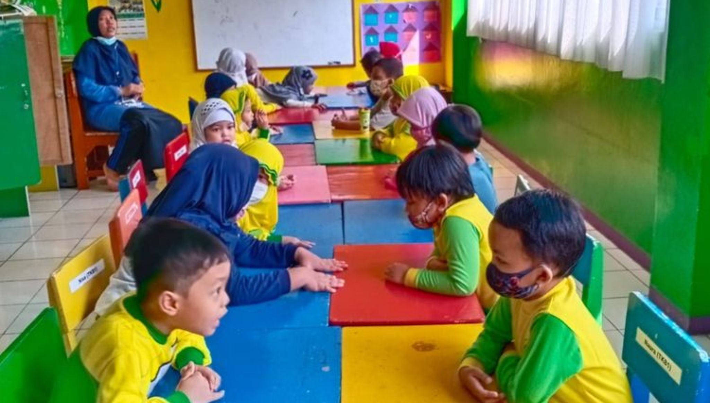

Selamat Datang di Website Resmi
TK Dharmawanita III Desa Keling
Media informasi, komunikasi, dan promosi pendidikan anak usia dini berbasis karakter Islami.

Aktivitas Anak-Anak Kami



👩‍🏫 Guru
4 Orang
👧 Murid
± 60 Anak
📅 Tahun Berdiri
2005
👩 Kepala Sekolah
Ibu Siti Aminah, S.Pd.AUD